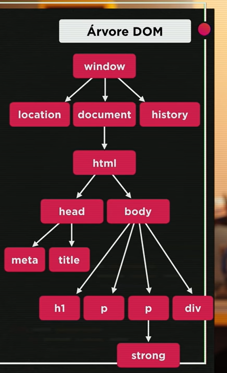

Introdução ao DOM
Essa aula Foi Dificil, peço que pesquise mais sobre e veja mais vezes esse sobre esse módulo
Oque é Dom?
O que é o DOM? O Document Object Model (DOM) é uma interface de programação para os documentos HTML e XML. Representa a página de forma que os programas possam alterar a estrutura do documento, alterar o estilo e conteúdo
Arvore DOM (simplificado)
Podemos navegar da seguinte maneira, pegando como exeplo a arvore Dom(isso dentro da tag script)
window.document.html.body
Esses são metodos de seleção com dom, com essas seleções mostraremos na tela as informações guardadas na variavel.